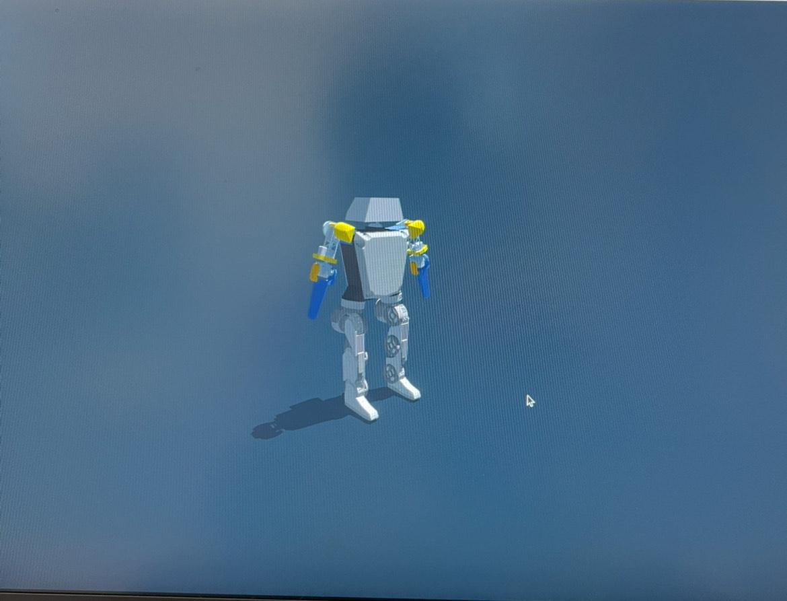

ECE senior at UT Austin - robotics, software, and the occasional game console.
I'm a senior at UT Austin studying electrical and computer engineering, focused on robotics and embedded systems. I like problems that sit at the intersection of math, code, and physical things that move.
Outside of school I've worked on robotic arm deployments at Amazon facilities. Right now I'm building an 8 kg bipedal humanoid robot, which walks untethered on real hardware using reinforcement learning policies I trained in simulation.

A custom 20 DoF bipedal robot with GIM6010-8 BLDC motors, ODrive controllers, and a CAN bus network. I trained PPO locomotion policies in Isaac Lab across 4,096 parallel environments, validated them in MuJoCo, and ran them on a 50 Hz control stack on a Raspberry Pi. It got featured by UT's Cockrell School in "What They Build in the Shadows".
ROS 2, NVIDIA Isaac Sim, ODrive, CAN Bus, SolidWorks, FreeCAD, CircuitPython, C/C++, Python, ESP32, Raspberry Pi, KiCad
I'm always open to interesting projects, internships, or conversations about robots.